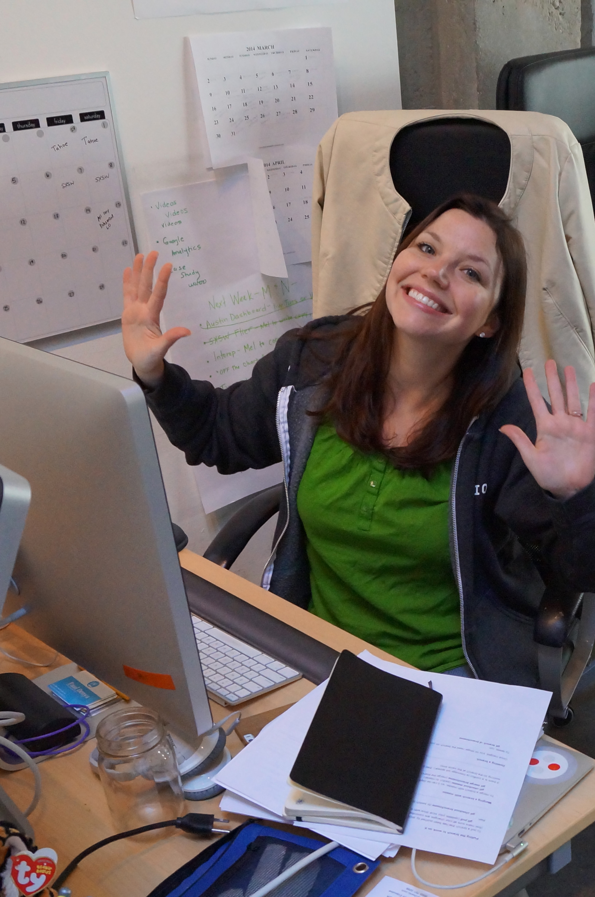

About melcurial
The first version of mel started years ago at Chartio when my Head of Communications, Mel, needed to update our static site without learning a full developer workflow.
At the time we were on Mercurial, so I built a tool and set of shortcuts that reduced the process to a few friendly commands - and named it melcurial (code-name mel) after its primary user!
Today, Product Managers and other non‑engineers run into the same barriers. mel exists to make contributing to a codebase organized, safe, and easy—for everyone.
Here she is celebrating her new found version control powers:
What mel is
- Simple: a tiny set of commands
- Safe: confirmations and helpful prompts
- Organized: proper Git workflow under the hood
- Friendly: clear, non‑technical language
Who it’s for
- Content editors and communicators
- Product Managers learning to contribute
- Designers making small UI/content tweaks
- Engineers who want a smooth, quick workflow
Goal: make contributing to codebases as easy as possible for everyone involved.